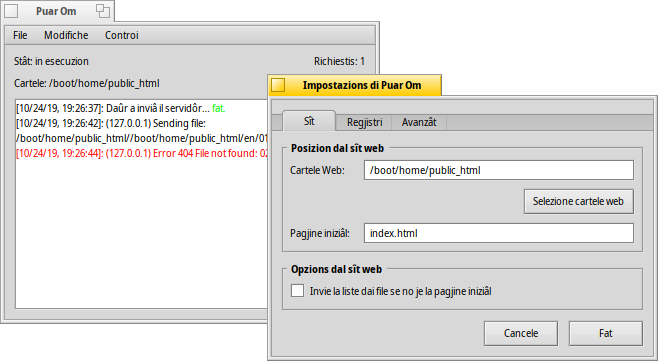

Puar Om
Puar Om
| Deskbar: | ||
| Posizion: | /boot/system/apps/PoorMan | |
| Impostazions: | ~/config/settings/PoorMan Settings |
Puar Om al è un piçul e ninin servidôr web che al è une vore facil di configurâ. Logjic che nol vedi funzionalitâts avanzadis come chei altris software par servidôrs robuscj, dal rest al è dome un puar om di servidôr web.
Ae sô prime esecuzion, Puar Om al domande cuale cartele e à di jessi servide al web. Se tu decidis chê , e ven creade une gnove cartele: /boot/home/public_html. Come pagjine iniziâl, lì al à di jessi presint un file HTML clamât in maniere predefinide index.html.
Puar Om si presente cuntune console semplice che e regjistre lis sôs ativitâts. Dopo, e je une informazion sul stât, par savê se il servidôr al è in esecuzion, ce cartele che e ven servide e une conte pal numar di richiestis. Lis impostazions si cambiin cun :

Il panel des impostazions si divît in trê schedis:
In tu puedis selezionâ une altre cartele di servî, inserî une altre pagjine iniziâl e vê la opzion par inviâ la liste dai file se la pagjine iniziâl no je presinte.
ti permet di dis/ativâ la regjistrazion te console o, come opzion, suntun file di regjistri separât.
La schede e ten lis impostazions pal numar massim di conessions simultaniis.
I elements dal menù tal barcon de console si spieghin ducj di bessôi. Cun chei tu puedis par esempli salvâ (parts) dal output de console, netâ la console o il file di regjistri e fâ partî/fermâ il servidôr o azerâ la conte des richiestis.